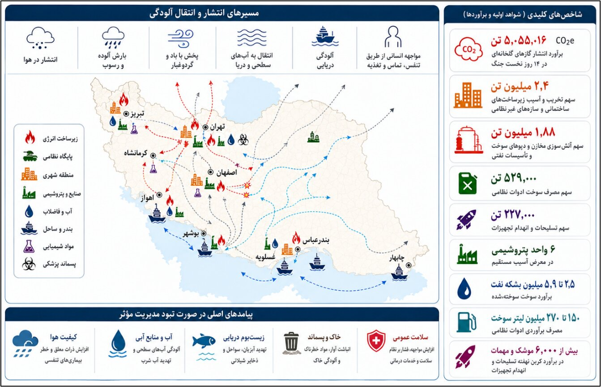
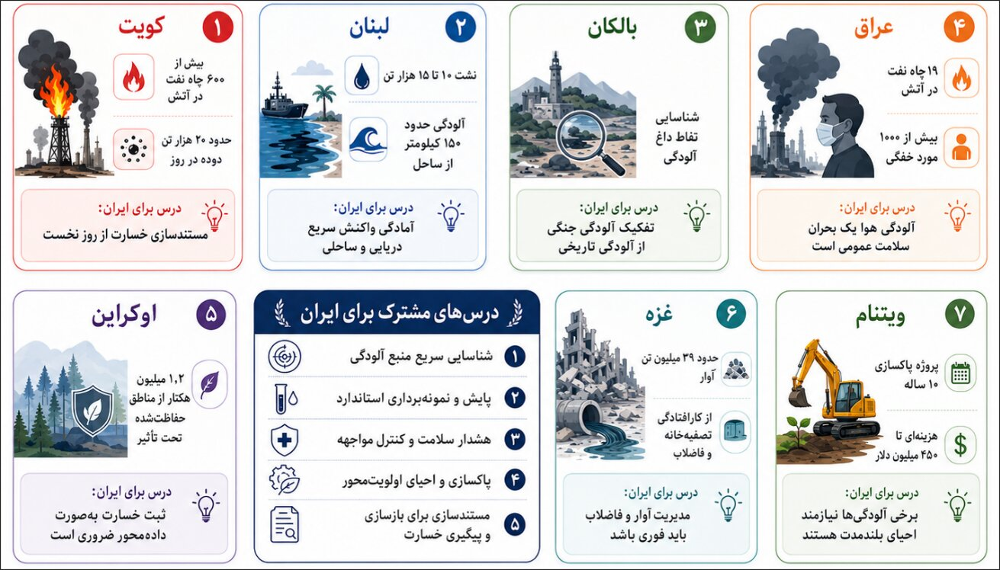
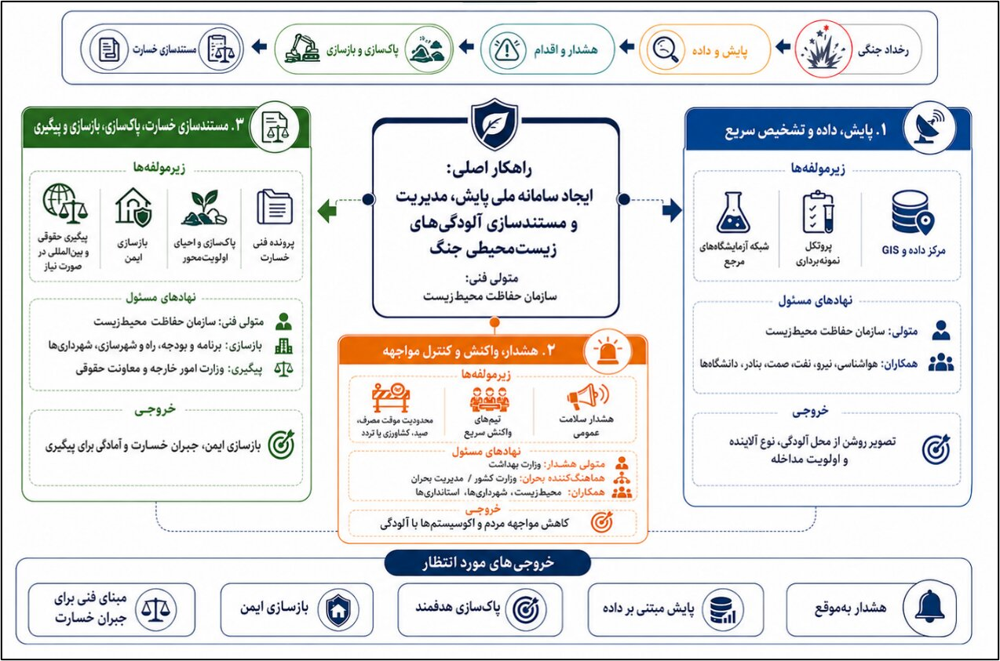

بررسی پیامدهای پنهان و بحرانهای ماندگار تخریب زیرساختهای حیاتی
آسیبهای رسیده به مکانهای مختلف صرفاً یک خسارت فیزیکی نیست؛ بلکه عوارض زیستمحیطی ناشی از این حملات، بحرانی برای امنیت ملی، سلامت شهروندان و توانایی کشور برای بازسازی محسوب میشود.
تجربه جهانی نشان میدهد که خسارتهای زیستمحیطی ناشی از جنگ، تنها زمانی قابل مهار، مدیریت و پیگیری حقوقی هستند که از همان لحظات ابتدایی وقوع حادثه به صورت عددی، جغرافیایی، آزمایشگاهی و مستند ثبت شوند.
ایجاد «سامانه ملی پایش، مدیریت و مستندسازی آلودگیهای زیستمحیطی» با ۴ هدف اصلی:


